This page show the best theaters in the Netherlands
State Museum
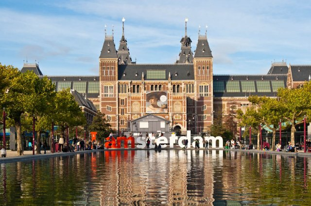
The museum was founded in 1800 in The Hague following the French example. At that time, it was called the National Art Gallery and represented the collections of Dutch governors. In 1808, by order of the King of Holland, Louis Bonaparte, the museum was moved to Amsterdam, and canvases owned by the city were added to its collection.
Van Gogh Museum
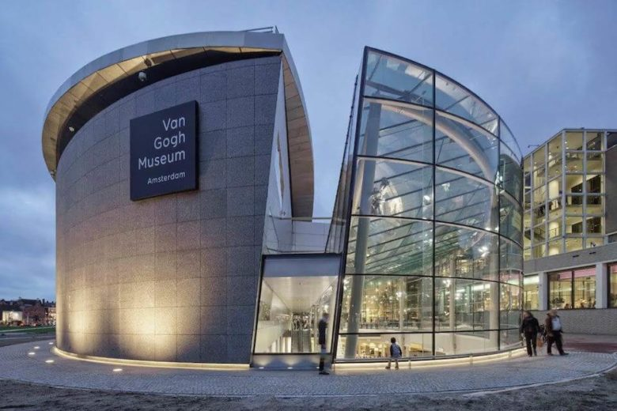
The art museum in Amsterdam, which preserves the world's largest collection of paintings and drawings by Vincent van Gogh, as well as the works of his contemporaries, opened on June 2, 1973. It is located in buildings designed by Gerrit Rietveld and Kise Kurokai. The museum's collection is the largest collection of Van Gogh paintings and drawings in the world, the 2nd museum in the Netherlands and the 31st most visited art museum in the world.
Museum NEMO
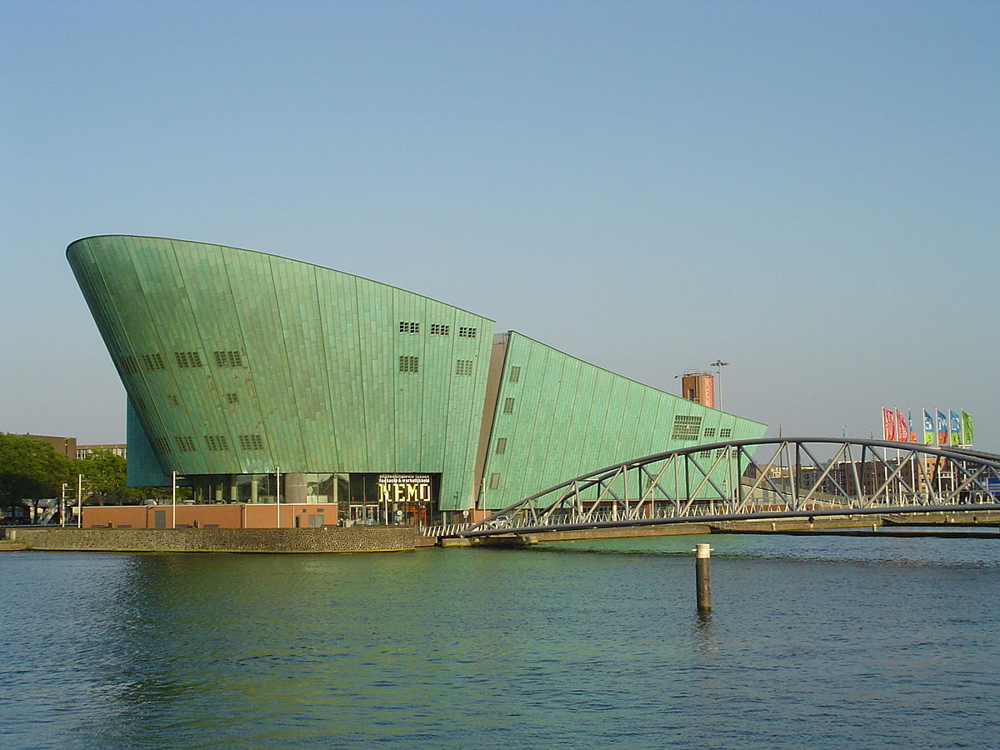
NEMO is the largest science museum in the Netherlands, built according to the project of Renzo Piano. Located in Amsterdam, NIMO arose on the basis of the "Museum of Labor", founded in 1923. In the 1950s and 1960s,it was called the "Dutch Institute of Industry and Technology." By the end of the 1980s, the idea of an educational museum arose that could awaken interest in science and technology from an early age.
Rembrandt House Museum
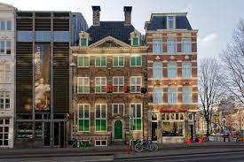
The Rembrandt House Museum is an art museum on Jodenbreestraat in the Jewish Quarter of Amsterdam. The museum opened in 1911 in the house that Rembrandt bought at the height of his fame in 1639 and lived in. The interior of the house-museum mainly presents paintings by Rembrandt's contemporaries, his students and his teacher Peter Lastman. There are four real Rembrandt paintings in the exhibition.
Amsterdam Historical Museum
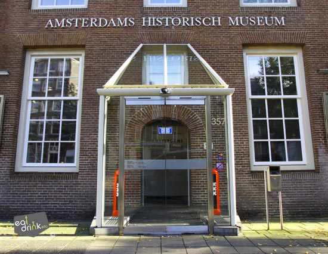
Opened in 1926 in the Weighing Chamber of Amsterdam - a building of the 15th century on the Newmarkt square - the New Market. Since 1975, it has occupied the building of the former asylum, which was built in 1580. It was expanded by the architects Hendrik de Keyser and his son Peter de Keyser. In 1634, the building was rebuilt by the artist and architect Jacob van Kampen. The shelter was located in the building until 1960.
Learn More
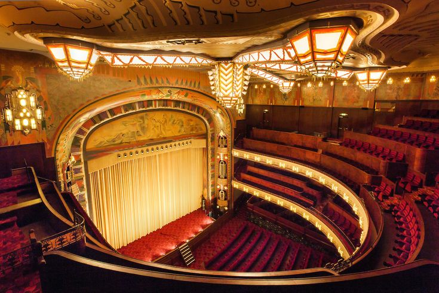
Сontact with the developer


State Museum
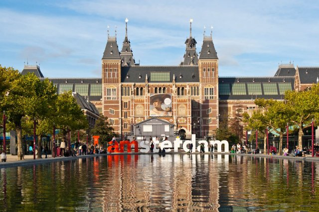Van Gogh Museum
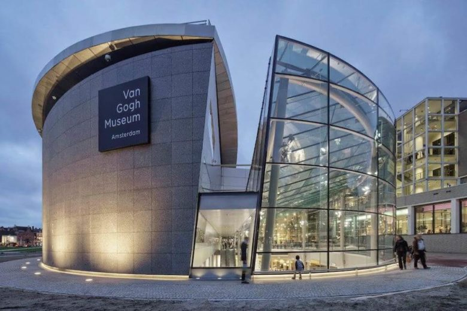Museum NEMO
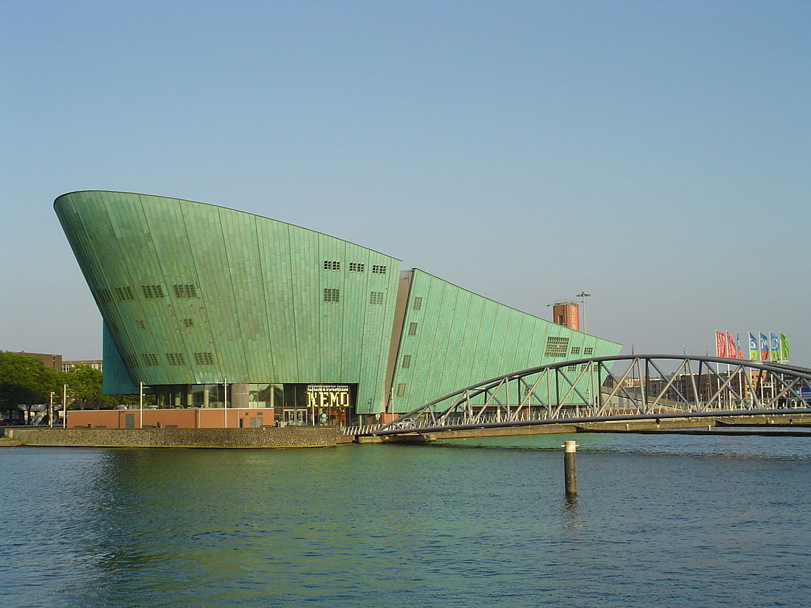Rembrandt House Museum
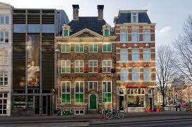Amsterdam Historical Museum
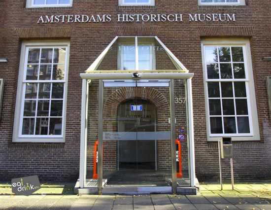Learn More
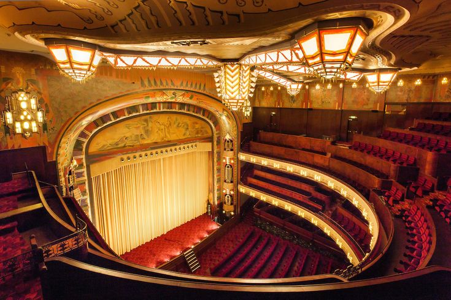
Сontact with the developer